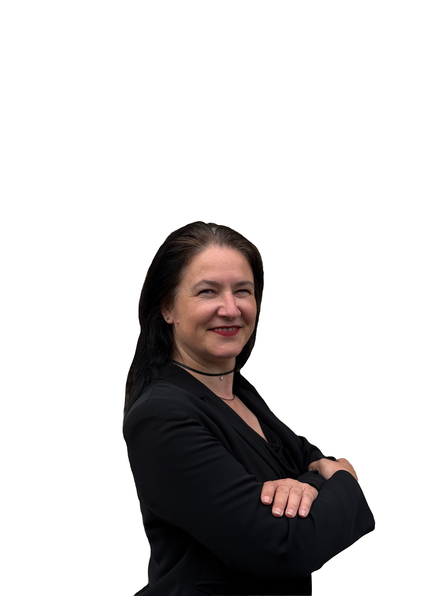

Rechtsanwältin für Steuerrecht · Inhaberin
Claudia Paschke
Claudia Paschke ist Rechtsanwältin für Steuerrecht und deckt ab, wofür andere zwei Kanzleien brauchen: Vertragsprüfung, Gesellschafterstreit, Betriebsprüfungen. Eine Person kennt dein Mandat von der Zahl bis zum Paragrafen.
Ihr Ansatz: Strukturen, Risiken und Möglichkeiten erklären, nicht nur Formulare ausfüllen, denn jedes Mandat verdient eine eigene Lösung.
Steuerfachangestellter · Digitalisierung & Prozesse
Fabrizio Danneberg
Fabrizio Danneberg treibt die Digitalisierung bei Tributum voran, für die Kanzlei genauso wie für die Mandanten, damit Buchhaltung und Kommunikation ohne Umwege laufen. Er befindet sich aktuell auf dem Weg zum Steuerberater.
Sein Ansatz: digitale Prozesse, die zuverlässig im Hintergrund funktionieren, damit Mandanten sich nicht um Fristen und Formulare kümmern müssen.
Tributum — gemeinsam für Sie da